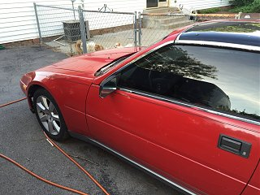
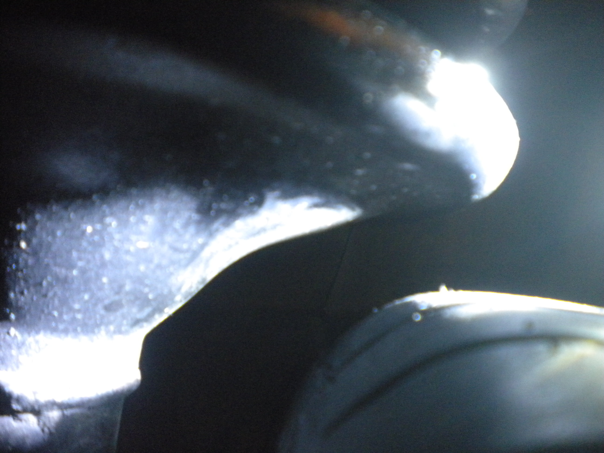

-
Found a set of 18" 350Z wheels off a 2003(I think) for a cheap price (curb rashed up, but I would be powder coating them anyway). I think that makes them 30mm offset. Is anyone running these or the 17" with 30mm offset? Wondering what is needed to run them on an 87-89 Z. I am/was looking at the 90-96 Z wheels, but don't feel like swapping all my lugs & studs out.
I saw on the Z31wheelshow a few 87-89Z's with 17" 30mm & 33MM offsets and it says direct fitment, but not sure if that means you can use the stock ZX lugs & studs or if you need to use the 350Z lugs with extended studs, etc etc. -
I'm running 17's from a 2004 (i think-- maybe it's an 03). Bolts up just fine with no rubbing. only issue is the center caps on the front wheels interfere with the dust cover. I think they work better with a good quality 1 1/2" spacer.--------------
Legal stuff:
**Nissan Employee**
Any information shared is simply my own opinion and NOT the opinion of Nissan
not legal stuff:
'88 300ZX 2+2-- driving… just details left
'22 Q60RS-- I tell the wife it's hers…
'87 Chaparral bowrider-- the next project
'00 Corolla-- kids car.
'14 E-350-- Gotta haul those kids in something.-
 #2.1Dunkine commentedBig thanks!
#2.1Dunkine commentedBig thanks!
Did you use the lugs nuts off your 88 or the ones off the 350z? -
mwolvinm - Are you running the 17x7.5's in front and 17x8's in the rear? Could one theoretically run all 4 wheels with the 17x8?
What size tires do you have on yours? Isn't a 1 1/2" spacer quite large if they fit, or are you just talking about making the wheels flush with the fenders? Thanks. -
Reds89 - You could run the 17x8 (33mm offset?) all the way around, but you might need to run spacers / adapters depending on what tires you are running. Mine looks 100% better with the 25mm adapters (posting a pic at the bottom of thread). I ran into a height issue with the 18's and ended up with adapters and 40 series tires. Oh tip for telling if they are maxima wheels or 350z, a lot of the 350z wheels had dimples, but I would check the offset either way.
-
-
I got the set of 18" 350Z (edit: ended up being off a maxima) wheels. They are 40mm, instead of the 350z 30 or 33mm.
Bolts up fine on rear with 245 45 18 tires.
Front with worn 225 45 18 hit the struts at the top edge of wheel:
but there looks like enough clearance on the sides:
I found a website with tire size comparison.
The 225 45 18 are +.4" wide and +.8" Taller than stock tires.
If I go with a 215 40 18 they are the same width and -.4" shorter than stock tires, which should make them a little more than an inch shorter than the 225's.
If 215 40 18 fit, then I could run 245 35 18 which supposedly are the same height and an inch wider.
Or I could just space them out. Anyone running spacers & longer studs? Guess I'll need to measure hubs to get them hubcentric too…
Last edited by Dunkine; 09-30-2017, 07:42 PM. -
Rear looks decent with 245 45 r18:
Last edited by Dunkine; 09-30-2017, 07:43 PM. -
I used the 88 nuts. Looks like yours have more offset than mine. I'd definitely run spacers.--------------
Legal stuff:
**Nissan Employee**
Any information shared is simply my own opinion and NOT the opinion of Nissan
not legal stuff:
'88 300ZX 2+2-- driving… just details left
'22 Q60RS-- I tell the wife it's hers…
'87 Chaparral bowrider-- the next project
'00 Corolla-- kids car.
'14 E-350-- Gotta haul those kids in something. -
Yeah, I should have looked at the inside the wheels before I took them. They are 18 X 7.5 40mm offset, I'm guessing off a Maxima, not a 350z. Two of them had slight bends on the inner lips too, had to beat on them with a hammer to get them straight. Only paid $160, but if I have to buy adapter (spacers) now, going to kill the cheapness. At least I have a machine to mount and balance, so that doesn't cost me extra. -
Found some 25mm hubcentric adapters on Amazon "Used-Like New" which by my understanding is supposed to mean new, but opened / blemished. Whoever returned them cross threaded the lug nuts on one of the adapters, so they are going back and I ordered a new set. But before I send them back I test fitted one to the front. The 225 45 18 cleared, the 245 45 18 is too close on the front.
For the front I am planning to pick up a pair of 225 40 18. They are .1" shorter and .4" wider than the stock 215 60 15, so mph should be the same.
For the rear, I am either going with the 225 40 18 (so I can rotate them) or I may get 275 35 18 which are .5" taller and 1.9" wider than the 225 40 18 and totally unnecessary for the N/A
Worn 225 45 18 on the front with the 25mm adapter:
and bring the wheel out just enough:
-
Got two 225 40 18 tires and the new set of 25mm adapters today. I mounted and balanced them and put on the front to check clearance. The lower profile is a little harder to work with. Going back and getting two more tomorrow for the rear if I have time. No way am I going to try and stuff 275 35's on 7.5" wide rims, not sure what I was thinking, I would need 9 or 10 inch rims and the 35 series would be even harder to work with. Plus I can at least rotate them front to back if they are all the same size (tires are directional). I'll have to sand and paint them after I get them all mounted up and road tested.
Here's one on the balancer:
Here's a new 225 40 18 (left) next to a new 215 60 15 (right). You can see the added width and the 40 series is a lot flatter than the 60 series. Height is pretty much the same.
Here's the front with the 25mm adapter:
From the side:
Plenty of clearance:
Last edited by Dunkine; 10-02-2017, 11:52 PM. -

Copyright © 2006–. All rights reserved. Privacy Policy
Comment